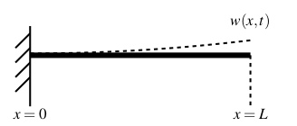
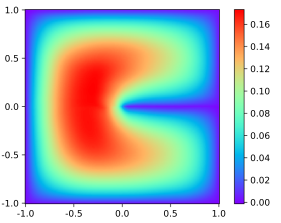
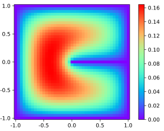

Para elucidar a história do cálculo variacional é importante mostrar um pouco da história dos máximos e mínimos de funções, problema pertinente ao cálculo diferencial, para, então, adentrar aos problemas de máximos e mínimos de funcionais, problema atribuído a área do cálculo variacional.
Os problemas de máximo e mínimo são corriqueiros na vida cotidiana, por exemplo, quando se quer encontrar o caminho com menor distância entre dois lugares para se caminhar uma menor distância, dentre vários outros problemas mais elaborados. Para esse exemplo específico não é necessário o uso de matemática avançada, porém, quanto mais complexidades são adicionadas aos problemas, mais ferramentas matemáticas são necessárias para a resolução, exata ou aproximada. Para simplificar estes processos, surgem os métodos para o cálculo de máximos e mínimos das funções.
Uma das primeiras formulações matemáticas próxima das atuais para os problemas de máximos e mínimos foi feita por Pierre de Fermat(1601 - 1665) em 1629 considerando curvas \(y=f(x)\). Ele fez comparações de \(f(x)\) e \(f(x+E)\), onde \(E\) é um número real positivo próximo de zero, ou seja, ele fez comparações do valor da função para pontos próximos. Esses valores geralmente são diferentes, porém, próximo de máximos ou mínimos a diferença se torna pequena. Deste modo, para achar os pontos de máximo ou mínimo, Fermat fazia \[ \frac{f(x+E)-f(x)}{E} \] e, após realizar a divisão, considerava \(E=0\). Após considerar o valor de \(E\) igual a \(0\), Fermat igualava a expressão obtida a \(0\), de onde conseguia extrair os valores das abscissas dos pontos de máximos e mínimos da função \cite{boyer}.
O que Fermat fez, de fato, foi igualar a primeira derivada de uma função a \(0\). É importante ressaltar que esse método utilizado por Fermat veio antes mesmo da invenção do cálculo diferencial por Isaac Newton(1642 - 1727) em 1665-1666 e Gottfried Wilhelm Leibniz(1646 - 1716) em 1676, de forma independente \cite{boyer}.
O ponto de partida do cálculo variacional se deu com Johann Bernoulli(1667 - 1748), em 1696, com a publicação do problema da braquistócrona no jornal científico Acta Eruditorium \cite{hist_courant}.
O problema pode ser enunciado como: "Sejam \(A\) e \(B\) dois pontos dados em um plano vertical. O problema da braquistócrona consiste em encontrar a curva que uma partícula M precisa descrever para sair de A e chegar em B no menor tempo possível, somente sob a ação da força da gravidade" \cite[p. 3]{calcvar}.
O próprio Johann Bernoulli foi um dos matemáticos que solucionou o problema da braquistócrona. Ele retardou a publicação da sua solução para estimular os matemáticos do seu tempo a testarem suas habilidades nesse novo tipo de problema matemático \cite{hist_courant}. Além de Johann Bernoulli, soluções independentes foram encontradas por diversos matemáticos, como Jakob Bernoulli(1654 - 1705) (1697), L'Hospital(1661 - 1704) (1697), Leibniz (1697), e Newton (1697), \cite{hist_still}.
A solução de Jakob Bernoulli considerava o aspecto da curva variável, sendo considerado o primeiro grande passo para o desenvolvimento do cálculo variacional \cite{hist_still}. Nesse problema, a quantidade a ser minimizada depende de uma curva e não apenas de uma váriavel real \cite{hist_courant}, diferentemente dos problemas relacionados ao cálculo diferencial, o que torna necessária a construção de novas ferramentas matemáticas.
Os métodos para a resolução de problemas deste tipo eram específicos com adaptações para cada caso, sendo que os métodos gerais para a resolução só foram desenvolvidos com o envolvimento dos matemáticos Euler e Lagrange nos estudos desses problemas \cite{hist_courant}.
O processo de minimização de funcionais envolve diretamente a resolução de equações diferenciais que, na maioria das vezes, pode não ter solução analítica. Uma forma de se contornar esse problema é o uso de soluções aproximadas e, com esse intuito, surge o método de Rayleigh-Ritz, fazendo o uso de funções admissíveis.
O método de Rayleigh-Ritz carrega o nome de dois pesquisadores, Lord Rayleigh(1842 - 1919) e Walter Ritz(1878 - 1909), porém seu desenvolvimento se deve, principalmente, a Walter Ritz, enquanto a solução apresentada por Lord Rayleigh é tratada como introdução, como será descrito abaixo.
Lord Rayleigh, em 1877, trabalhando com as energias potencial e cinética de sistemas, assumiu um padrão de vibração numa determinada frequência calculando a frequência de vibração livre por meio do equacionamento das energias potencial e cinética. Esse método ficou conhecido como método de Rayleigh e a sua precisão depende de quão próximo o padrão de vibração escolhido está do correto \cite{LEISSA_2005}.
Em 1908 e 1909, Walter Ritz publicou dois artigos descrevendo procedimentos simples para a resolução de problemas de valor de contorno e de autovalores numericamente para qualquer nível de exatidão necessário usando funcionais \cite{LEISSA_2005}. Esse procedimento foi chamado de método de Ritz.
Não se sabe exatamente quando o nome Rayleigh passou a ser agregado ao método de Ritz, transformando-se em "método de Rayleigh-Ritz". Uma das razões pelas quais isso ocorreu é o fato de que o método de Rayleigh pode ser considerado como um caso especial do método de Ritz quando uma única função admissível é utilizada para a aproximação \cite{LEISSA_2005}.
O método de Rayleigh foi utilizado frequentemente, porém, nas últimas décadas o método de Ritz ou, como é chamado hoje, de Rayleigh-Ritz se mostrou aplicável a uma gama enorme de problemas devido, principalmente, a revolução tecnológica promovida pelos computadores, a partir da invenção dos transistores e microprocessadores \cite{LEISSA_2005}.
O método de Rayleigh-Ritz possui aplicações nas mais diversas áreas sendo, porém, a análise estrutural uma das áreas em que o método é mais utilizado. Seu uso é empregado, principalmente, com o objetivo de encontrar as chamadas frequências naturais. As frequências naturais "indicam a taxa de oscilação livre da estrutura, depois de cessada [a] força que provocou o seu movimento. Em palavras similares, representa o quanto [a] estrutura vibra quando não há força aplicada sobre ela." \cite[p. 1]{Vasquez2015}.
\citeonline{RRM_Applications} exemplificam essa aplicação ao procurar as frequências naturais em um tipo específico de viga, chamada de consola, que é uma viga apoiada apenas em uma de suas extremidades. A Figura 1.1 mostra uma representação de uma viga desse tipo, onde a curva \(w(x,t)\) representa o deslocamento dinâmico. Diversos outros trabalhos trazem essa mesma abordagem ao método, visando analisar frequências naturais de vibração, como, por exemplo, o trabalho de \citeonline{mrr_beams}, que estuda a frequência natural de vigas seguindo o modelo de Timoshenko e de Euler usando o método de Rayleigh-Ritz. \citeonline{GROSSI_2001} mostra a aplicação do método à problemas envolvendo placas, ao invés de vigas.

Além da abordagem convencional do método, existem trabalhos que visam aliar o método à técnicas de inteligência artificial, como o aprendizado de máquina. \citeonline{deep_ritz} afirmam que modelos baseados em redes neurais profundas podem ser utilizados em tarefas como a resolução de equações diferenciais parciais ou a modelagem molecular. Além disso, o trabalho propõe um método chamado de deep Ritz method (método de Ritz profundo, em tradução literal) para a resolução de problemas variacionais. Esse método utiliza-se de representações de funções de redes neurais artificiais no contexto do método de Ritz \cite{deep_ritz}.
Um dos exemplos mostrados por \citeonline{deep_ritz} para ilustrar a eficácia da abordagem é a solução para a equação de Poisson em duas dimensões. A Figura 1.2 apresenta a solução utilizando dois métodos diferentes, sendo a Figura 1.2a a solução pelo deep Ritz method com 811 parâmetros e a Figura 1.2b a solução pelo método das diferenças finitas com 1681 parâmetros.


Os exemplos acima citados mostram tanto aplicações clássicas quanto uma aplicação moderna do método de Rayleigh-Ritz e serve, inclusive, como motivação ao estudo do tema.
A linguagem de programação Python foi criada por volta de 1990 por Guido van Rossum no Stichting Mathematisch Centrum nos Países Baixos \cite{Python_history}. Guido é o seu principal criador, porém, com o desenvolvimento open source, a mesma apresenta colaborações de diversas pessoas — atualmente, há cerca de mil colaboradores no repositório da linguagem no GitHub1. Em 2001, foi criada a Python Software Foundation, organização sem fins lucrativos, responsável por possuir a propriedade intelectual relacionada a Linguagem Python \cite{Python_history}.
As principais motivações para o uso da linguagem Python neste trabalho é o seu funcionamento simples, a facilidade de uso, grande comunidade de usuários, além do fato de ser uma linguagem de programação gratuita e de código aberto tornando-a, deste modo, acessível.
Além dos diversos colaboradores diretos no desenvolvimento da linguagem, existem os colaboradores indiretos que criam, por exemplo, os pacotes com funções prontas para o uso. Dentre os pacotes científicos mais conhecidos estão alguns do ecossistema SciPy:
NumPy é um pacote utilizado para computação científica contendo objetos para trabalhar com arrays (arranjos em português) multidimensionais, rotinas de operações em arrays, transformadas de Fourier, álgebra linear, estatística, dentre outras funcionalidades \cite{NumPy}.
SciPy contém módulos para matemática, ciências e engenharia. As funções trazidas pela SciPy permitem o trabalho com álgebra linear, cálculo, interpolação, manipulação de arquivos, otimização, processamento de sinais, entre outros \cite{SciPy}.
Matplotlib é uma biblioteca que permite plotar dados, tornando a visualização dos mesmos tão simples quanto possível \cite{Matplotlib}. Segundo \citeonline{Matplotlib}, a biblioteca possui um ambiente de estados de máquina similar ao utilizado no software comercial MATLAB2, trazendo uma experiência similar para usuários familiarizados com o MATLAB.
SymPy é uma biblioteca que contém classes e funções que permitem a manipulação simbólica de elementos matemáticos, isto é, os elementos matemáticos são representados de forma exata e não aproximados \cite{SymPy}. Por exemplo, ao se utilizar uma calculadora científica para realizar algum cálculo com o número \(\pi\), será apresentado no visor o cálculo utilizando uma aproximação para \(\pi\). Já na matemática simbólica, \(\pi\) não seria aproximado e, portanto, o número continuaria sendo representado pela letra grega. É importante perceber que, em determinados casos, a abordagem aproximada é mais eficiente e, em outros, a abordagem simbólica.
Existem outros pacotes científicos no ecossistema do SciPy e, também, fora do ecossistema, porém, serão citados, aqui, apenas esses devido ao fato de que os seus usos são voltados para a matemática e aplicações.
A linguagem e ambos os componentes citados são desenvolvidos em código aberto de forma colaborativa. Uma das vantagens dessa forma de desenvolvimento é o rápido aperfeiçoamento de suas funcionalidades, documentação e, também, a rápida correção de erros.